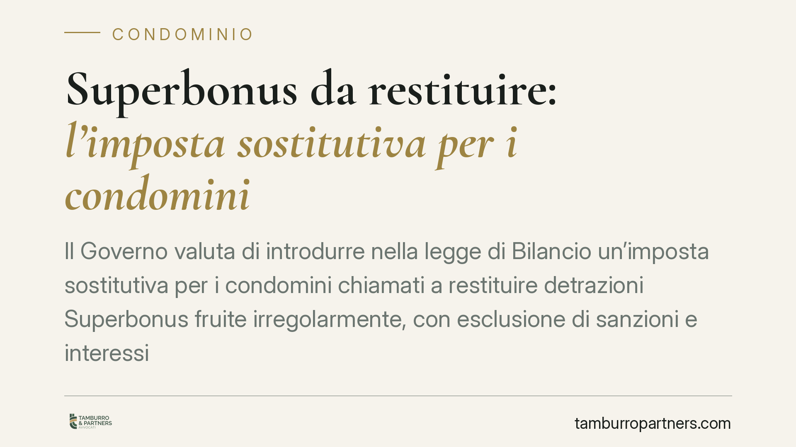

Superbonus da restituire: l'imposta sostitutiva per i condomini
Il Governo valuta di introdurre nella legge di Bilancio un'imposta sostitutiva per i condomini chiamati a restituire detrazioni Superbonus fruite irregolarmente, con esclusione di sanzioni e interessi. Oggi il recupero dell'Agenzia delle Entrate colpisce il beneficiario anche in buona fede. La misura, però, non è ancora legge: incide solo il piano fiscale, non quello contrattuale verso imprese e professionisti.

Imposta sostitutiva Superbonus: cosa cambia per i condomini
Secondo le indiscrezioni sulla manovra 2026, il Governo starebbe valutando un meccanismo di definizione agevolata per chi deve restituire somme legate al Superbonus. In concreto, un'imposta sostitutiva consentirebbe di sanare la posizione versando un importo forfetario, con esclusione di sanzioni amministrative e interessi.
Attenzione alla terminologia. Non si tratta di uno "scudo fiscale" in senso tecnico — espressione legata storicamente al rientro di capitali dall'estero — ma di una sanatoria circoscritta al recupero di detrazioni edilizie contestate dall'Agenzia delle Entrate.
La misura resta allo stato di ipotesi. Finché non sarà pubblicata in Gazzetta Ufficiale, nessuna posizione può considerarsi definita sulla base di anticipazioni di stampa.
Il quadro normativo: art. 119 e art. 121 DL 34/2020
L'art. 119 del DL 34/2020 disciplina i presupposti della detrazione al 110% (e aliquote successive). L'art. 121 regola le due alternative alla fruizione diretta: lo sconto in fattura e la cessione del credito.
Il punto critico è l'individuazione del soggetto esposto al recupero. L'art. 121, comma 4, conferma che l'Agenzia delle Entrate recupera l'importo corrispondente alla detrazione non spettante in capo al beneficiario — cioè il condominio, o i singoli condomini per la quota di competenza — maggiorato di interessi e sanzioni. Questo accade anche quando il beneficiario abbia agito in buona fede e l'irregolarità sia riconducibile all'impresa o al tecnico.
La responsabilità del cessionario: dolo e colpa grave
Un equivoco diffuso riguarda la posizione di banche e imprese cessionarie del credito. La responsabilità solidale del cessionario non discende dal solo comma 6 dell'art. 121, ma dai commi 6-bis e seguenti, introdotti dal DL 11/2023.
La regola è netta: il cessionario risponde in solido con il beneficiario solo in presenza di dolo o colpa grave nell'acquisto del credito. Fuori da queste ipotesi, il concorso nella violazione non è contestabile al cessionario che abbia acquisito e conservato la documentazione prescritta (visti, asseverazioni, titoli edilizi).
Il perimetro della "colpa grave" resta terreno interpretativo delicato. Gli orientamenti — da verificare nella loro evoluzione — tendono a valorizzare la diligenza istruttoria del cessionario: assenza di documentazione, incongruenze macroscopiche tra lavori dichiarati ed eseguiti, prezzi palesemente fuori mercato. Sul versante penale-cautelare, la giurisprudenza di legittimità si è pronunciata più volte in tema di sequestro dei crediti d'imposta, distinguendo la posizione del cessionario estraneo alla frode da quella del cessionario consapevole.
L'onere della prova della buona fede
Per il condomino, dimostrare la buona fede non è una formalità. In sede di recupero, la posizione del beneficiario è oggettiva: l'esclusione di sanzioni e interessi passa, oggi, dalla ricostruzione documentale e dalla prova di aver fatto affidamento su asseverazioni e visti rilasciati da professionisti abilitati. L'eventuale imposta sostitutiva avrebbe proprio la funzione di superare questo passaggio probatorio, definendo la pretesa fiscale a forfait.
Resta però fermo un dato centrale: la definizione fiscale non estingue il piano contrattuale.
Due piani distinti: verso l'Erario e verso i privati
Una cosa è il rapporto con l'Erario — che la sanatoria mira a chiudere. Altra cosa è il rapporto contrattuale con l'impresa appaltatrice o con il tecnico asseveratore che ha causato l'irregolarità.
Il condominio che abbia subìto il recupero conserva, in linea di principio, le azioni di responsabilità contrattuale verso chi ha eseguito male i lavori o rilasciato attestazioni non veritiere. L'imposta sostitutiva, se approvata, chiuderebbe la partita con il fisco ma non il diritto al risarcimento verso i privati. Confondere i due piani significa rinunciare, di fatto, a tutele che restano azionabili.
Cosa fare in concreto
- Ricostruire il fascicolo documentale di ogni intervento: asseverazioni, visti di conformità, titoli edilizi, SAL e contratti con imprese e professionisti.
- Verificare lo stato degli accertamenti: controllare se siano già stati notificati atti di recupero, comunicazioni o inviti dall'Agenzia delle Entrate, e i relativi termini.
- Non assumere decisioni sulla base di anticipazioni di stampa: la sanatoria produce effetti solo dopo la pubblicazione in Gazzetta Ufficiale.
- Tenere distinti i due piani: la definizione fiscale non pregiudica le azioni contrattuali verso impresa e tecnico asseveratore.
- Ogni posizione va esaminata singolarmente, poiché le soluzioni dipendono dai documenti disponibili e dalle contestazioni concrete.
Contributo informativo a cura di Tamburro & Partners Avvocati — Avv. Giuseppe Tamburro. Non costituisce parere legale.
Ogni condominio ha una storia a sé.
Se gestisci un'amministrazione e vuoi un confronto su una specifica questione condominiale, scrivi allo studio. Ti rispondiamo entro un giorno lavorativo.